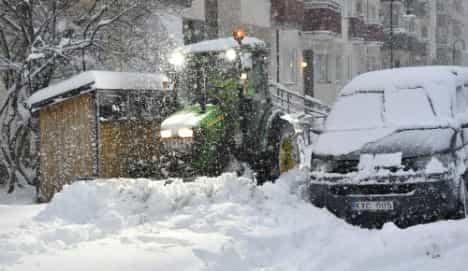

< < < Back
Stockholm’s “Feminist” Snow Removal Program Causes The Entire City To Shut Down – Return Of Kings
Convinced that previous snow plowing policies were “sexist,” the city government of the Swedish capital of Stockholm recently implemented a “feminist” system for clearing it. It ended in disaster and the city came to an absolute standstill. For a start, four times as many people than usual were hospitalized for snow-related injuries. Nearly as importantly, countless workers, most of them men, were prevented from getting to work. It would appear that the patriarchy-backed snow won, as local politicians ended up apologizing for the havoc-causing changes.
Havoc like this:

Forgetting that motor vehicles are often more impeded by snow than pedestrians (and create a greater safety risk), municipal resources, which had already been increased, were diverted to clearing bicycle paths and sidewalks and away from main roads. Areas like schools were also prioritized, which again ignores the frequently greater ease of walking in snow than driving in it, plus the longer distances car commuters face compared to children, mothers and other women walking to places. The situation is quite plainly moronic for a further reason: non-main roads and other parts of a city take up much more space, meaning that the Swedish capital’s snow removal teams were targeting a far larger, less densely used zone. To boot, this was all during a November already breaking records for snowfall.
The saga in Stockholm reads like an microcosm of feminism itself: an over-educated (meaning under-educated) group of leftists come together, create “data” based on feelings, and produce a plan of action that screws up an entire community. Feminists in Stockholm had previously complained that the thoroughfares cleaned up first and most extensively by snowplows were the ones heavily used by men. How they came to this conclusion is unclear but, given the shutdown of the city that resulted from the feminist changes, it wasn’t based on any solid reasoning. With private cars and public transport vehicles alike unable to move in many cases, the “female-friendly” snow-clearing ended up adversely impacting far more people, including women, than the old one.
Well done, feminists and white knights.
What this says about Sweden
Is it really surprising that one of the people responsible for Stockholm’s “female-friendly” snow plowing scandal, Mayor Karin Wanngård, is a feminist and career politician who first joined the council in her teens?
Because Sweden is perhaps the most concentrated welfare state in the world, not having people at their jobs and instead stuck in snow is a very bad thing. How can a country continue to pay such a large bill for handouts with elected representatives of the caliber of Stockholm’s trying to ruin things? Sweden is also home to a growing class of low-skilled migrant communities, including many tens of thousands from the most recent Mediterranean waves last year. Its recent migrant population is now essentially the same proportionally-speaking as states more typically associated with multiculturalism, such as Canada and Australia. And non-ethnic Swedes in Sweden tend to come from more troublesome cultures, compared to the more assimilation-friendly East Asians and Indians emigrating to Canada and Australia.
How Sweden intends to deal with issues like this while balancing urgent economic needs remains to be seen, especially with brain-dead initiatives like the snow plow fiasco taking precedence. Add to the mix the recent creation of a “mansplaining” hotline by a Swedish labor union and you start to see the “real” problems Scandinavia’s most basketcase society is trying to solve.
So who was organizing the snow plowing–and actually doing it?
Yup, you guessed it, it’s a man driving.
There’s no doubt that the feminist snow plowing scheme was an unmitigated disaster. And it’s also extremely likely that the vast majority of people tasked with clearing Stockholm’s streets are men. Oh, the irony. Not only do feminist politicians try to preference women in the removal of snow, they expect men to do the work in achieving it. Just as sanitation workers and garbage collectors are invariably male, don’t expect to catch too many female snowplow operators and other snow-clearing employees in Stockholm.
Wake up, Sweden
Swedish multiculturalism in action.
Stockholm’s snow removal catastrophe is emblematic of a country refusing to deal with its real malaise. While the men who built Sweden are categorized as would-be oppressors, Swedish society itself is close to breaking point. Even Stockholm’s central train station is now terribly unsafe and various city police forces have long made it known that they do not have control of many suburbs. In particular, Malmö, Sweden’s third city, and certain districts of Stockholm are notorious for ethnic ghettos, gang violence, rape, and other crime.
But no, mansplaining hotlines and not removing snow in a new, feminist way are the clear and present dangers most Swedes should fear at night.
Read More: Australian Male Senator Shuts Down Female Colleague For Accusing Him Of “Mansplaining”